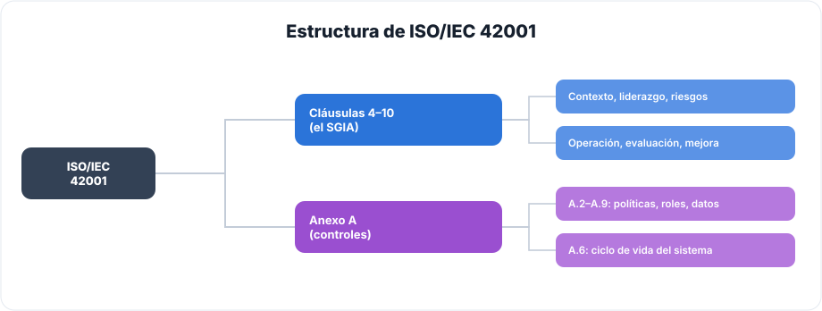
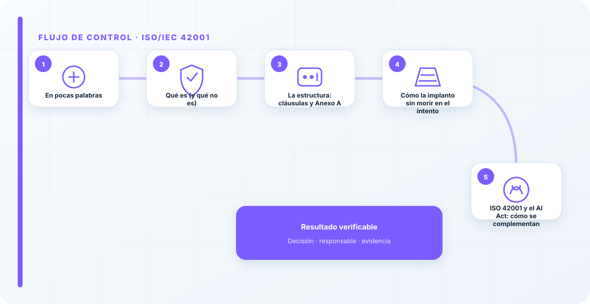
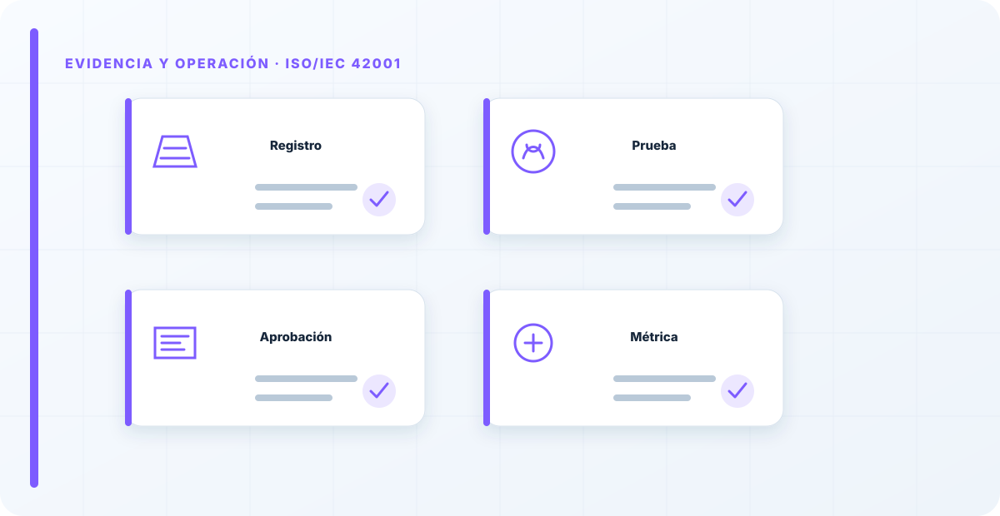

En pocas palabras
ISO/IEC 42001 es la primera norma internacional de sistema de gestión para la inteligencia artificial, y la trato como lo que es: el esqueleto sobre el que cuelgo todo el gobierno de IA. Conviene entender bien qué certifica y qué no, porque ahí se juega toda la expectativa. No certifica que tu IA sea "buena" ni "ética" ni que no vaya a tener sesgos; certifica que tienes un sistema para gestionarla —con política, riesgos, controles, medición y mejora— y que ese sistema funciona de verdad. Es aburrida de explicar y enormemente útil de tener, porque convierte las buenas intenciones en algo repetible, demostrable y auditable.
Qué es (y qué no es)
Es un sistema de gestión, con la misma lógica de fondo que el ISO 27001 de seguridad: un ciclo de planificar, hacer, verificar y actuar aplicado, en este caso, a los sistemas de IA. Si has vivido una implantación de 27001, el terreno te sonará; la diferencia está en el objeto —la IA— y en los controles específicos que trae.
Y es igual de importante tener claro lo que no es: no es un sello de calidad del modelo, no es una garantía de que no habrá sesgos, y desde luego no es un documento que se saca para la auditoría y se guarda hasta la siguiente. Certificarte en 42001 no dice que tu IA sea infalible; dice que tienes una forma ordenada y demostrable de gobernarla. Esta distinción marca la expectativa: quien espere que la norma le resuelva el problema técnico del sesgo se frustrará; quien la entienda como el marco que le obliga a tener política, roles, evaluación de riesgos e impactos, controles y revisión, obtendrá exactamente lo que necesita: estructura.
La estructura: cláusulas y Anexo A
La norma tiene dos mitades que conviene tener siempre presentes, porque cumplen funciones distintas:

Por un lado, las cláusulas 4 a 10, que son el sistema de gestión en sí: contexto y alcance, liderazgo y política, planificación y riesgos, soporte, operación, evaluación del desempeño y mejora. Son el "cómo gestionar". Por otro, el Anexo A, con el catálogo de controles que puedes aplicar según tu evaluación de riesgos —políticas, roles, gestión del dato y, muy en el centro, el A.6, que gobierna el ciclo de vida del sistema de IA—. Es el "qué controlar". La relación entre las dos mitades es la clave: no aplicas todos los controles del Anexo A porque sí, sino los que tu evaluación de riesgos justifica. Aplicarlos todos "por si acaso" es la receta para ahogarse en documentación inútil.

Cómo la implanto sin morir en el intento
El error clásico es intentar implantarla entera de golpe y ahogarse en papeles. Yo la abordo por capas. Primero, el alcance y la política: qué entra, qué queda fuera y con qué compromiso. Luego, la evaluación de riesgos e impactos, que es la que decide qué controles del Anexo A aplican de verdad. Después, esos controles sobre los sistemas reales, no sobre un PowerPoint. Y por último, la medición y la revisión que cierran el ciclo y lo mantienen vivo.
La regla que repito: no se trata de tener todos los documentos, sino de que el sistema decida, mida y corrija. Un SGIA pequeño que funciona vale infinitamente más que uno enorme de cartón piedra. He visto implantaciones fracasar por ambición: querer cubrirlo todo el primer año, generar cientos de páginas y que nada de aquello se usara. Prefiero un alcance modesto que respire de verdad y crezca, a un despliegue monumental que nace muerto.
ISO 42001 y el AI Act: cómo se complementan
Son piezas distintas que encajan como anillo al dedo. El AI Act es la obligación legal: te dice qué tienes que cumplir según el riesgo del uso. ISO 42001 es el cómo: te da el sistema de gestión con el que producir gran parte de esa evidencia de forma ordenada. No cumples el AI Act automáticamente "por tener" la 42001 —son cosas distintas—, pero tener la 42001 te deja a medio camino de las obligaciones de alto riesgo y, sobre todo, con la casa ordenada para demostrarlo cuando te lo pidan.
Por eso, cuando un cliente tiene que cumplir el AI Act y no sabe por dónde empezar, mi recomendación casi siempre pasa por montar el SGIA bajo 42001: le da estructura, le ordena el trabajo y le prepara la evidencia. Es la diferencia entre correr detrás de la ley con parches y tener un sistema que produce el cumplimiento como subproducto de trabajar bien.
La 42001 no te certifica que hagas las cosas bien; te certifica que tienes un sistema para no dejar de hacerlas. Esa diferencia es la que separa una certificación útil de un cuadro en la pared. He visto organizaciones certificadas cuyo SGIA no había parado ni corregido nada en un año: papel. Y otras sin certificar cuyo sistema decidía de verdad. La norma es el andamio; lo que sostiene el edificio es que lo uses.
Los errores que veo una y otra vez
- Esperar que certifique la "bondad" o la ética del modelo.
- Implantarla entera de golpe y ahogarse en documentos.
- Aplicar todos los controles del Anexo A sin que la evaluación de riesgos los justifique.
- Montarla en paralelo a la gestión que ya existe, en vez de integrarla.
- Certificarse y dejar el sistema parado hasta la siguiente auditoría.
- Confundir tener la 42001 con cumplir el AI Act automáticamente.
Cómo lo llevaría a un entorno real
Cuando aterrizo iso/iec 42001 en una organización, no empiezo por comprar una herramienta ni por redactar veinte páginas. Empiezo por dibujar qué ocurre hoy: quién solicita el cambio, quién lo aprueba, qué sistemas intervienen, qué datos cruzan el proceso y quién se entera cuando algo falla. Ese dibujo suele descubrir más problemas que cualquier checklist. En riesgo y cumplimiento, lo peligroso no es solo carecer de controles; también lo es creer que existen porque alguien los escribió una vez.
Después separo lo imprescindible de lo deseable. Lo imprescindible debe poder comprobarse: un responsable identificado, una regla clara, una evidencia fechada y un mecanismo para reaccionar. En este caso revisaría especialmente alcance, cláusula y control. No me vale una respuesta del tipo «lo gestiona el proveedor» o «eso lo mira seguridad». Necesito saber qué persona toma la decisión, con qué información y dentro de qué plazo.
La implantación debe crecer con el riesgo. Un piloto interno puede funcionar con una ficha breve y una revisión manual. Un sistema que afecta a clientes, empleados, dinero o información sensible necesita segregación de funciones, pruebas independientes, monitorización y un expediente mantenido. Mi criterio es sencillo: cuanto más difícil sea deshacer el daño, más fuerte debe ser la barrera antes de producción.
Decisiones que deben quedar por escrito
Hay decisiones que no deberían vivir en una reunión ni en un mensaje de chat. Para iso/iec 42001 dejaría documentados el alcance, los supuestos, los límites de uso, las excepciones aceptadas y las condiciones que obligan a detener o reevaluar. El documento no tiene que ser enorme, pero sí debe permitir que otra persona entienda por qué se hizo lo que se hizo.
También registraría quién puede cambiar evidencia, quién valida auditoría y quién recibe las alertas relacionadas con mejora continua. Cuando esas tres responsabilidades se mezclan, aparece el clásico problema: el mismo equipo construye, aprueba y declara que todo funciona. No siempre se puede separar por completo, sobre todo en organizaciones pequeñas, pero al menos debe existir una revisión por alguien que no dependa del éxito inmediato del despliegue.
Las excepciones merecen un tratamiento propio. Una excepción sin fecha de caducidad acaba convirtiéndose en la arquitectura real. Por eso exigiría motivo, riesgo aceptado, responsable, compensaciones, fecha de revisión y criterio de cierre. Si falta uno de esos elementos, no es una excepción gestionada; es una deuda invisible.

Un ejemplo práctico
Imaginemos que un equipo quiere incorporar iso/iec 42001 a un servicio que ya está en producción. La propuesta promete reducir tiempos y automatizar tareas, pero utiliza componentes que cambian con frecuencia. Antes de aprobarlo, pediría una prueba limitada, un inventario de dependencias, un flujo de datos y una definición clara de qué acciones quedan fuera del alcance.
Durante la prueba recogería resultados normales y casos límite. No solo miraría si funciona; comprobaría qué ocurre cuando faltan datos, cambia una versión, se pierde conectividad, llega una entrada manipulada o un usuario intenta superar sus permisos. Ahí es donde se ve si el diseño aguanta. En muchas pruebas felices todo parece seguro porque nadie ha intentado romper la hipótesis de partida.
Si los resultados son aceptables, la salida a producción tendría condiciones: versión fijada, configuración aprobada, logs disponibles, responsables de guardia, procedimiento de rollback y revisión tras las primeras semanas. Si alguno de esos elementos no existe, prefiero retrasar el despliegue. Un día de demora suele ser más barato que investigar después un comportamiento que nadie puede reconstruir.
Qué evidencias guardaría
Para demostrar que el control funciona conservaría evidencias que cuenten una historia completa, no capturas sueltas. La historia debe enlazar necesidad, decisión, implementación, prueba y operación. En iso/iec 42001 eso incluye como mínimo la ficha del activo, el diagrama vigente, la configuración aprobada, el resultado de las pruebas y el registro de cambios.
No guardaría información por acumular. Si los logs contienen prompts, documentos, datos personales o secretos, aplicaría minimización, control de acceso y retención. La evidencia debe ayudar a investigar y auditar sin crear una segunda fuga de información. Es frecuente endurecer el sistema principal y dejar un repositorio de evidencias abierto a demasiadas personas.
- Propietario y finalidad de iso/iec 42001, con fecha de revisión.
- Inventario de alcance, cláusula y dependencias asociadas.
- Criterios de aceptación y resultados sobre control y evidencia.
- Configuración efectiva, versión y aprobación del cambio.
- Alertas, incidentes, excepciones y acciones correctivas cerradas.
Señales de que el control no está funcionando
El primer síntoma es que nadie sabe responder con rapidez quién es el responsable. El segundo es que la documentación describe una versión distinta de la que está operando. El tercero es que las alertas existen, pero llegan a un buzón que nadie revisa. Cuando aparecen esos tres síntomas, el problema no es tecnológico: el control se ha desconectado de la operación.
También desconfío de las métricas demasiado perfectas. Cero incidentes, cero excepciones y cien por cien de cumplimiento pueden significar excelencia, pero con frecuencia significan que no estamos mirando. Prefiero indicadores que enseñen tendencia: tiempo de corrección, antigüedad de excepciones, cobertura de pruebas, cambios sin revisión y reincidencias.
Por último, revisaría el comportamiento después de cada cambio significativo. En IA, una actualización de modelo, dataset, prompt, herramienta, permiso o proveedor puede alterar el riesgo sin cambiar el nombre del servicio. Si el proceso solo reevalúa cuando se crea un proyecto nuevo, se quedará ciego durante la mayor parte de la vida útil.
Mi criterio de cierre
Considero que iso/iec 42001 está razonablemente controlado cuando el equipo puede explicar el proceso sin depender de una sola persona, reconstruir una decisión con evidencias y detener el servicio sin improvisar. No busco perfección documental; busco que la organización pueda tomar decisiones repetibles bajo presión.
El cierre no consiste en marcar todas las casillas. Consiste en demostrar que los riesgos relevantes tienen propietario, que los controles se prueban y que las desviaciones producen una acción. Si la evidencia no cambia ninguna decisión, probablemente estamos generando burocracia. Si una decisión importante no deja evidencia, estamos creando fragilidad.
Este enfoque es el que intento mantener en toda CyberLibrary AI: explicar el control de forma que lo entienda negocio, pero con suficiente profundidad para que arquitectura, seguridad, auditoría y operaciones puedan aplicarlo de verdad.
Referencias y marcos relacionados
Contenido educativo y técnico. No sustituye asesoramiento jurídico ni una auditoría formal.